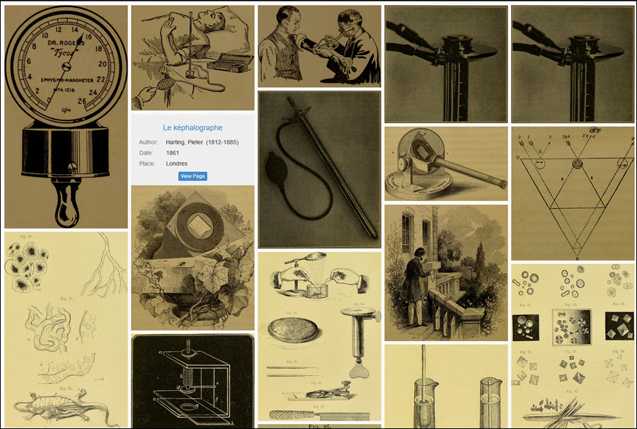
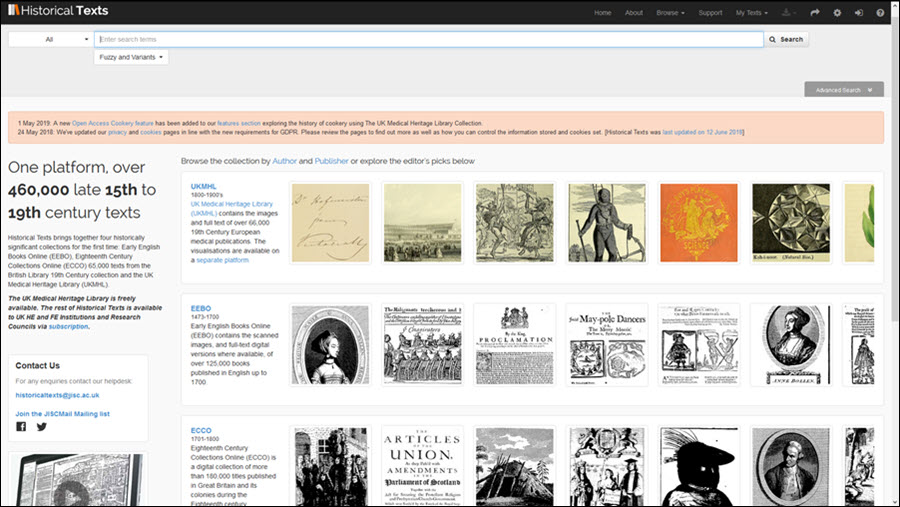

<div class="row">
    <div class="col-xs-12 topSpace">

        <div class="sideMenu">
            <div class="title">About</div>
            <ul>
                <li><a href="/about/">About home</a></li>
                <li><a href="/developmentroadmap/">Development Roadmap</a></li>
                <li><a href="/collections/">Collections</a></li>
                <li><a href="/advisoryboard/">Advisory Board</a></li>
                <li><a href="/news/">News</a></li>
                <li><a href="/events/">Events</a></li>
                <li><a href="/presentations/">Presentations</a></li>
				<li class="selected">
                    <a href="/reports/">Reports</a>
                </li>
                <li><a href="/sitemap/">Sitemap</a></li>
                <li><a href="/accessibility/">Accessibility</a></li>
                <li><a href="/privacy/">Privacy</a></li>
                <li><a href="/cookies/">Cookies</a></li>
                <li><a href="/browser/">Browser Compatibility and Support</a></li>
                <li><a href="/surveys/">Surveys</a></li>
            </ul>
        </div>

        <div class="support">

            <ol class="breadcrumb">
                <li><a href="/about/">About home</a></li>
                <li class="active">Reports</li>
            </ol>

            <h1>Reports</h1>


            <h2>The UK Medical Heritage Library and the Relationship Between Print and the Digital</h2>
			<h3><a href="https://academic.oup.com/jvc/article/23/2/231/4989186" target="_self">Journal of Victorian Culture Vol 23 Issue 2 April 2018</a></h3>
			
			<p><a href="https://www.jisc.ac.uk/staff/peter-findlay" target="_self">Peter Findlay</a> explores the current digitization landscape and Jisc&#39;s ongoing role within it, some of the technical difficulties facing digitization projects and the juxtaposition between digitising for preservation and digitising for access. The article also chronicles the creation of the <a href="/collections" target="_self">UK Medical Heritage Library collection</a> in partnership with The Wellcome Library and nine university and professional society libraries. This includes examining the selection process for inclusion, the importance of discoverability and metadata, and finally the link between the physical items and their digital counterparts.</p>
			
			<p><em>The image wall from the UK Medical Heritage dedicated labs site.</em></p>
			
			
			
			<hr/>
			
			<h2>Unlocking the Treasure Chest</h2>
			
		  <h3><a href="https://cilip.pagelizard.co.uk/webviewer/#cilipupdatejanuary2014/unlocking_the_treasure_chest" target="_self">CILIP Update January 2014</a></h3>
			
			<p>Scott Gibbens explains how Jisc plan to make improvements to the Jisc Historic Books service as it becomes Jisc Historical Texts including the use of user centred design, seeking feedback from users, direction from the advisory group and proposed improvements to the technology underpinning the database.</p>
			
		  <p><em>The updated interface as proposed in the report.</em></p>
			
			
		
		</div>

    </div>
</div>